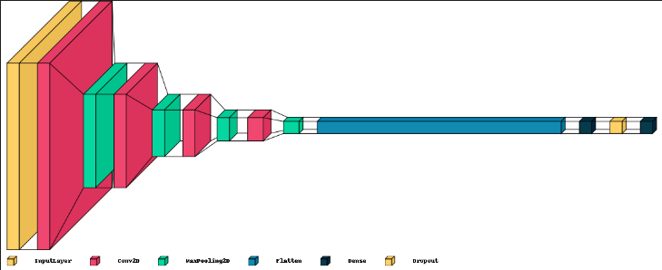
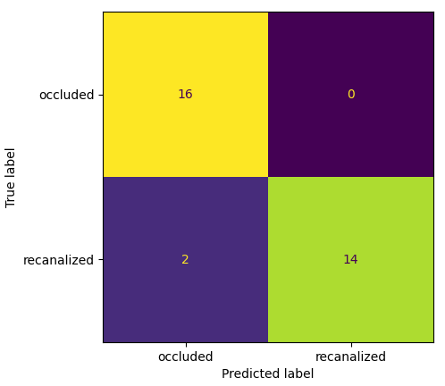
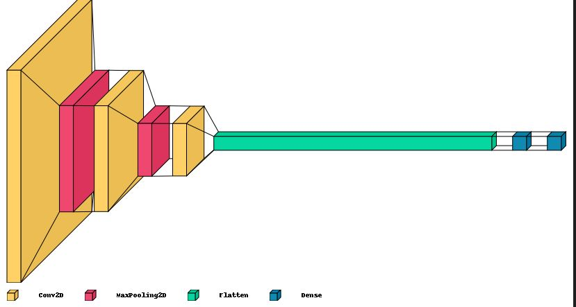
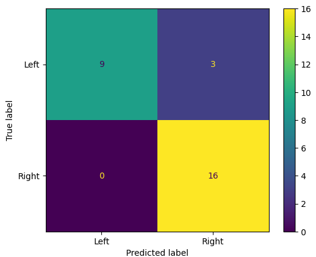

For my capstone project, a main deliverable was developing a machine
learning algorithm that is capable of doing the binary classification of
occlusion and recanalization of digital subtraction angiography (DSA)
medical images. In medical terms, an occlusion is a blood clot in the
brain causing an ischemic stroke, a recanalization of that occlusion is
when the clot is broken and blow has returned to a normal or near normal
state.
Our model has been trained using DSA images as the input dataset, and
was tested against similar images in order to measure how well it is
classifying each image. In our case 0 denotes occlusion, and 1 means
recanalization.
Using Python in Jupyter Notebook along with TensorFlow and Keras for the
machine, we were able to train, test and validate the model initially
using transfer learning with models from RadImageNet, then transitioning
to using our own model. For the project, in a brief summary, we followed
the methodology of Data Organization -> Preprocessing -> Training.
Data organization required lots of filtering through the raw data,
setting up the data into numpy arrays, and standardizing the data to
ensure all images are the same dimensions. Preprocessing included
labeling the data, min-max normalization, and data augmentation.
Training the model was done initially with transfer learning, then to
developing custom models.
The results and performance of the model were measured using confusion
matrices, accuracy, and F1 scores. In this project, we were able to
achieve an F1 score of 0.9333 and accuracy of 0.9375.
Furthermore, performing a 5-Fold Cross Validation test on the model, it
achieved high 90s across the board for all runs/folds. This project was
extremely successful as the initial target for accuracy given to us by
the sponsor was ~70%.
Transfer Learning model and code:
ocRec_transferLearning.ipynb, Custom model and code:
ocRec_customModel.ipynb
Below are images of the graphical representation of the custom model
used and the confusion matrix of the results.


Similarly, for my capstone project, another main deliverable was
developing a machine learning algorithm that is capable of doing the
binary classification of hemisphere localization of digital subtraction
angiography (DSA) medical images. In medical terms, the hemisphere is
the location of the stroke causing blood clot. It is either right or
left hemisphere, left meaning it is in the left side of the patients
brain, and right meaning the clot is in the right side of the patients
brain.
In our case 0 denotes left hemisphere, and 1 means right hemisphere. For
this project, I followed the same methodology as above but with
different labels representing hemisphere rather than occlusion and
recanalization.
The results and performance of the model were measured using confusion
matrices, accuracy, and F1 scores. In this project, we were able to
achieve an F1 score of 0.9143 and accuracy of 0.8928. Again, this
project was extremely successful as the initial target for accuracy
given to us by the sponsor was ~70%.
Custom model and code:
hemisphere_customModel.ipynb
Below are images of the graphical representation of the custom model
used and the confusion matrix of the results.


This project simulates a worst-fit dynamic partition memory allocation
that approximates some functionality of malloc() and free() in the
standard C library. From the command line, the program will be given the
page size, and a list of allocation and deallocation requests from
standard input. Allocation requests will be denoted by a tag and size,
and deallocation requests will be denoted by a single negative tag, for
example, 2 300, -3, respectively.
Worst-fit is choosing the largest possible partition for allocation
requests. If there is none, then the program simulates the OS requesting
memory for some multiple of page size (depending on the allocation
request) and splits it if necessary to a free and occupied partition.
For deallocation requests, the program will find all partitions with the
matching tag number and make those partitions free, merging any
partitions to the right or left of it.
Each partition contains the following information; the tag (-1 if free),
the size of the partition, and the address of the partition (the address
of the first partition is 0, beyond that it is the total size of all
previous partitions). The output of the program will be the total number
of pages requested, the maximum free partition size, and the address of
that partition. In case of ties, it must choose the partition with the
smallest address.
My program utilizes a linked list to maintain all partitions to allow
splitting and merging to be a constant time operation. As well as a hash
table to store all partitions belonging to the same tag, which will
process deallocation requests much faster. And finally, it uses a
balanced binary tree for tracking of free partitions, sorted by size
first, and address second. This allows any tasks requiring checking the
largest free partition to be much faster.
Input constraints:
- The number of requests (both allocation and deallocation) will be in
the range of 0 to 1,000,000.
- The page size will be in the range of 1 to 1,000,000 (ignoring the
base 2 requirement of page sizes).
- Each request's tag will be in the range of -10,000,000 and 10,000,000.
- Each request's size will be in the range of 1 and 10,000,000.
Program:
memsim.cpp
| efficiency: O(nlogn) complexity - 1 million requests under 10 seconds
A file allocation table is a simple file system used by early operating
systems. A corrupted FAT contains a chain that is an infinite loop, a
FAT that is not corrupted does not contain a looped chain. My program
will use a depth-first-search (DFS) traversal method to identify the
longest block chain present. The program will output the starting node
of the longest chain. If there are many chains of the same longest
length, it will output all of them.
The program takes in an FAT from standard input in the form of numbers
delimited by whitespace. For example, {6 12 7...} represents that the
next pointer of block '0' is block '6', and the next pointer of block
'1' is block '12'. The only input constraint is that the number of
entries in the file allocation table is in the range of [1, 10,000,000].
Program:
fatsim.cpp
| efficiency: O(n) complexity - 10 million FAT entries under 10 seconds
or 1 million entries under 1 second
This project implements a round-robin CPU scheduling simulator. The
program takes a set of processes, arrival times, and time slices from
standard input and calculates the start and finish time. Furthermore,
the program tracks the condensed sequence length to be outputted as
well. From the command line, it takes two arguments, the quantum which
is the amount of time the CPU will try to schedule for each process, and
the max_seq_len, which is the maximum length of the sequence to be
tracked.
My program utilizes a job and ready queue, as well as the current time
and the remaining bursts of all processes. The optimizations applied to
this project that makes it as efficient as possible is that it skips the
current time to the maximum possible time that it can whenever possible.
Input constraints:
- The processes are sorted by their arrival time, in ascending order.
- All arrival times will be non-negative, and all burst times are
greater than 0.
- Process IDs will be consecutively numbered, starting at 0.
- All processes are 100% CPU-bound.
- Number of processes will be between 0 and 30.
- Time slice and CPU bursts will be integers between 1 and 2^62.
- Process arrival times will be integers between 0 and 2^62.
- The finish time of every process will fit into an int64_t.
Program:
scheduler.cpp
| efficiency: finish under 10 seconds for all test cases under the above
constraints
A deadlock is defined as a situation where two or more processes are
unable to continue executing because they are waiting for each other to
release resources that they need in order to proceed. My program will
take in data from standard input and find if there is a deadlock, once
the very first deadlock is found, the program exits and prints the
results, which is the index or line of text that it was on from the
input, as well as the process names (procs) that are causing the
deadlock. If no deadlock is found, it will report index = -1 and procs =
[].
This program takes in text from standard input where each line is of the
following format: process -> resource, or process <- resource. The
separation is any number of whitespace. Note that <- represents an
assignment edge and -> is a request edge.
The following constraints is that; both process and resource names will
only contain alphanumeric characters and be at most 40 characters long.
The number of edges/lines will be ranging from [0, 30,000].
Program:
find_deadlock.cpp
| efficiency: finish under 10 seconds for all test cases under the above
constraints
The purpose of this project was to implement a multi-threaded
implementation that reads numbers from standard input and outputs any
numbers that are prime. The program takes in one command line argument
n_threads which is the number of threads to be used while executing.
This algorithm divides the given number by every number up to the square
root, this takes extremely long unless it is parallelized. My program
will divide that division up between all threads so that it may be done
simultaneously and also take advantage of thread re-use so that it is
not constantly creating and destroying threads. I also implemented
thread cancellation, so that the divisions stop across all threads as
soon as a divisor is found. The most efficient solution I found is to
only use barriers to protect access and updates to shared variables.
Again, this program assumes 1 <= n_threads <= 256 and the input numbers
are between [2, (2^63) - 2].
Program:
detectPrimes.cpp
| efficiency: up to approximately N times speedup on a computer with N
physical cores (depending on processor)
The purpose of this project was to take original single-threaded code
and converting it to a multi-threaded implementation. The constraints of
this project was to only create and join threads, I was not allowed to
use any semaphores or mutexes.
The program takes in two command line arguments, radius, and n_threads,
where radius defines the precision and how much summation is needed to
be done, and n_threads is the number of threads the user would like to
execute the program with. Note (0 <= radius <= 100,000, 1 <= n_threads
<= 256). The program is based on the algorithm described
here.
Program:
calcpi.cpp
| efficiency: up to approximately N times speedup on a computer with N
physical cores (depending on processor)
This program is given a current directory that will be recursively
scanned through to collect certain data. The program takes in a number
(N) from standard input, along with the "current" directory location.
The program then recursively collects the following data: the largest
file name, largest file size, number of files and directories, total
size of all files found, the N most common words from text files, all
top level vacant directories, and the largest images including their
names and pixel sizes.
Top level vacant directories are specified by the furthest vacant
directory. For example, given directory exm, if a subdirectory exb is
vacant, so that exm/exb is vacant, the program will only take exm as a
top level vacant directory. The same applies for any magnitude of vacant
directories.
Program:
analyzeDir.cpp
| efficiency: should outperform the equivalent Python program
analyzeDir.py
A palindrome is any word that remains the same after reversing it and
ignoring the case. For example: 'Did', '01-!-10', 'x'. This program
takes in text from standard input which contains any number of words
separated by whitespace. The output of the program will be the longest
palindrome found in the text. In case of ties, the program will output
the first longest palindrome found.
Program:
fast-pali.cpp
| efficiency: 2 GB input finished under 30 seconds